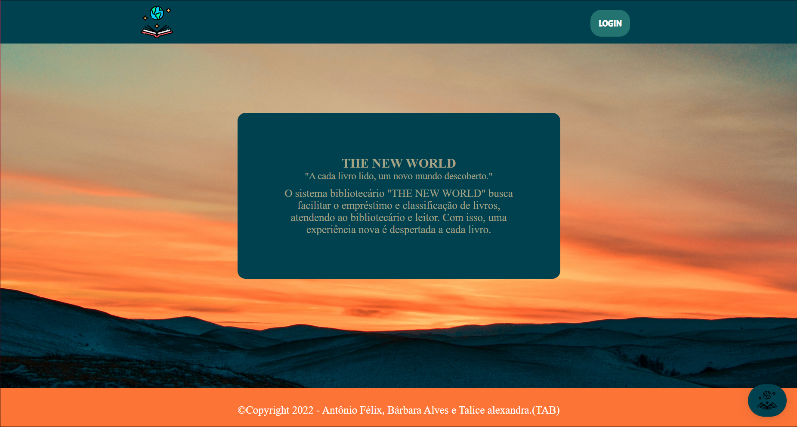
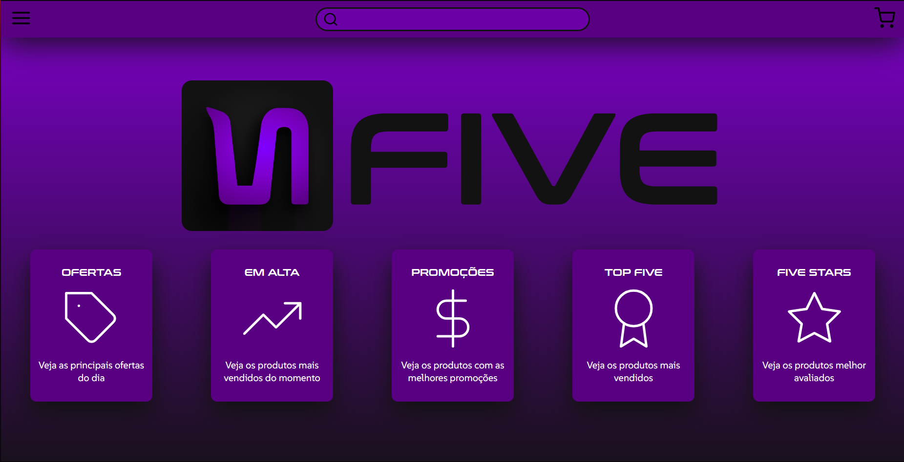
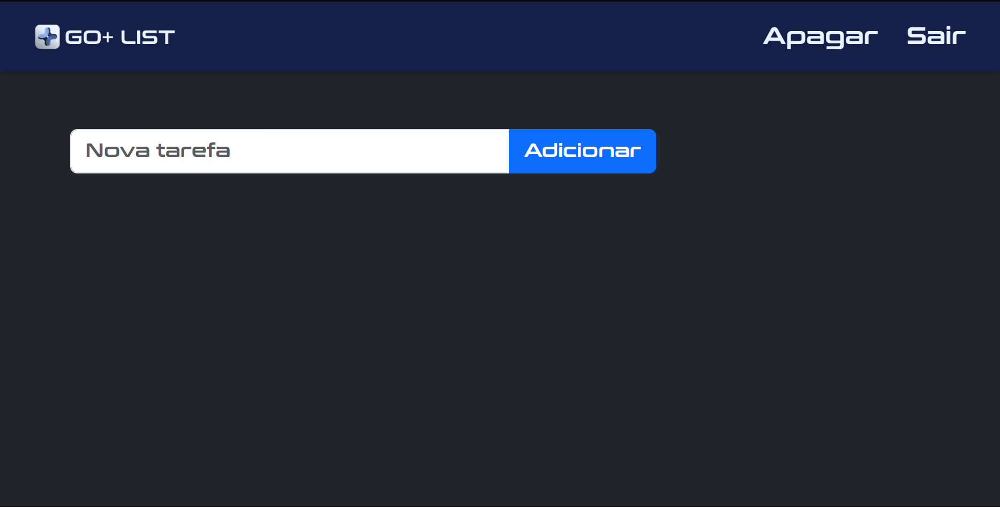
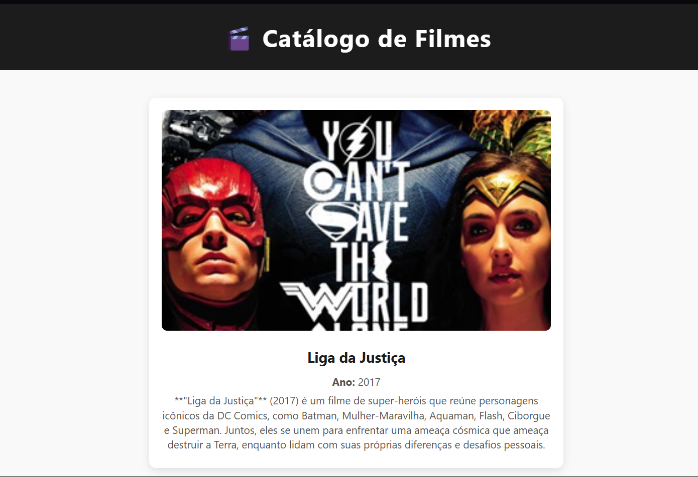
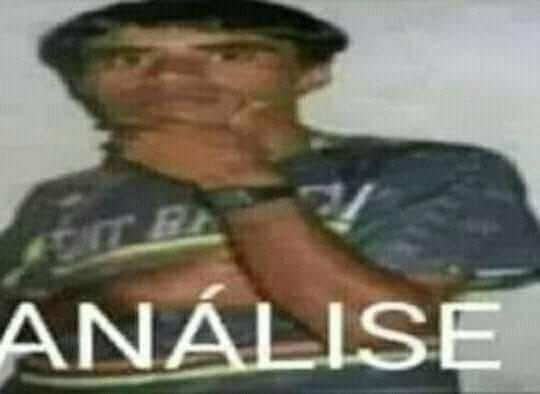

Bem-vindo ao Meu Site
Este é um projeto HTML + CSS para prática.
Olá, sou Antônio Félix
Desenvolvedor web especializado em criar experiências digitais incríveis com foco em soluções inovadoras.
Usufruindo das habilidades individuais e coletivas para melhorar e otimizar ideias.
Meus Projetos
Projeto 1
Esse projeto foi desenvolvido para adquirir conhecimento, nos quesitos trabalho em equipe, cooperatividade, dentre outros. No qual o sistema bibliotecário "THE NEW WORLD" busca facilitar o empréstimo e classificação de livros, atendendo ao bibliotecário e leitor. Com isso, uma experiência nova é despertada a cada livro.
Ver repositórioProjeto 2
Esse projeto foi desenvolvido para adquirir conhecimento, para desenvolvimento de sites de compra. Logo, o projeto é um e-commerce destinado a venda de produtos digitais (com possibilidade de venda de produtos físicos) com plano de afiliação. (Focado no front-end)
Ver repositórioProjeto 3
Projeto em grupo de um "To do list", lista de afazeres, utilizando o framework Django, praticando o CRUD, mas não tivemos a insersão do Upgrade
Ver repositórioProjeto 4
Projeto em grupo de um "To do list", lista de afazeres, utilizando o framework Django, praticando o CRUD, mas não tivemos a insersão do Upgrade
Ver repositórioProjeto 5
Esse projeto está sendo desenvolvido para Extensão II, do curso de ADS. Em breve, poderão visualizar algo inovador e cheio de easter eggs.
Ainda sem acesso